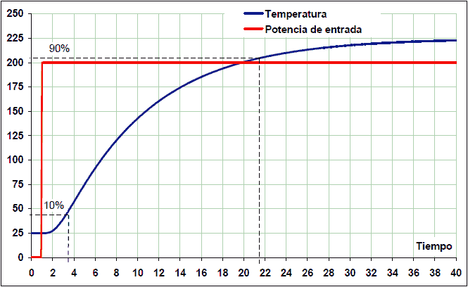
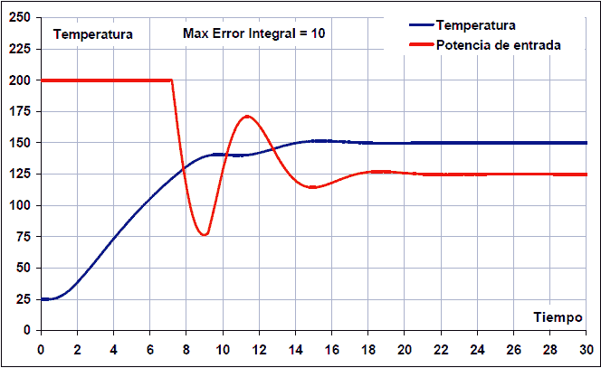
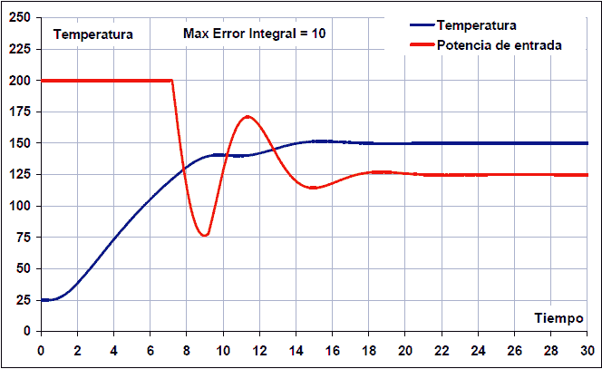

Digital PID controller¶
Many current controllers use digital microcontrollers. This page will present the programming of a PID regulator implemented with a microcontroller. Digital regulators replace various elements in a traditional control system with calculations in a programmed system. In the following figure you can see a diagram of a regulator controlled by a microcontroller.

The microcontroller functions are enclosed in the square with dotted lines.
The blocks that serve as a connection between the microcontroller and the system are a DAC (digital to analog converter) and a ` ADC (analog to digital converter) <https://es.wikipedia.org/wiki/Conversor_de_se%C3%B1al_anal%C3%B3gica_a_digital>`__. These two blocks allow you to translate the analog signals of the controlled system into digital numbers used by the microcontroller and vice versa.
Sometimes the ADC and DAC converters can be implemented with a PWM regulator.
Sampling period¶
While analog systems are continuous, digital systems are discontinuous. This means that their values are evaluated or changed every certain period of time called the sampling time. The sampling period defines how many times per second the analog-digital conversions will be performed and the PID parameters will be calculated. From now on the sampling period will be represented by the letter T.
The closed loop response of a system controlled by a digital PID will depend on this sampling period. If this time is too high, the stability of the system will be lower and the system may become unstable and not controllable. One method of estimating the sampling period is to calculate the oscillation period of the closed-loop system with a gain that causes oscillations. A sampling period of less than one tenth of the time or period of oscillation will be taken.
In the example below, the proportional gain has been increased until the oscillations in the step response are maintained. The oscillation period is then 5.6 seconds and therefore the sampling period must be less than 0.56 seconds.

Oscillation time and sampling period:
Tc = 26.8 - 21.2 = 5.6 seconds (oscillation time)
T < Tc / 10 = 0.56 seconds (Sampling Period)
If the system is overdamped and does not present oscillations, the criterion for choosing the sampling time will be based on the step response. As a general rule, it is accepted that T must be 10 times less than the rise time of the system before an open-loop step.
This rise time can be calculated as the time it takes for the system to rise from 10% to 90% of the final value.
The following image represents the step response of a thermal system.
{kind=link}
This system takes to rise from 10% to 90% of the final value 21.5 - 3.5 = 18 seconds. Therefore, for this example system, the PID controller sampling time should be at most one tenth of 18 seconds:
T < response_time / 10
T < 18/10 -> T < 1.8 seconds
In both cases, the same plant has been used to calculate the sampling time. As can be seen the results are very different. With the second method the sampling time is three times longer than with the first. Therefore, the sampling time also depends on the response to be achieved and the type of system.
Whenever possible, it will be preferable to use the first method since it calculates shorter times and, therefore, safer.
Sampling period and derivative term¶
Although it has been explained before that reducing the sampling time is desirable because it increases the stability of the system, excessively reducing the sampling time also presents problems.
One problem with reducing the sampling time too much is that it increases the calculations needed in the microcontroller and therefore can overload it. Another problem with reducing the sampling time is that it makes it difficult to calculate the derivative term. In this case, high-frequency noise affects the system more. Furthermore, the variation of the input between two samples is so small that it is affected by the quantization error of the analog-to-digital converter.
Therefore, the ideal is to establish a sampling time that achieves an acceptable response in the system without greatly overloading the calculations and without affecting the derivative term.
Example: how the quantization error affects with very small sampling times
A thermal system whose sensor changes at a rate of 0.1 volt/second is sampled by a 10-bit (1024 level) analog-to-digital converter with a voltage reference of 5 volts. The sensitivity of the analog-digital converter will be:
1024 points * (0.1 v/s / 5v) = 20 points/second.
If the sampling period is one second, the measurement variation will be large enough to evaluate the derivative term. The sensor reading will be in consecutive samples: 100, 120, 140, 160, etc.
If instead a sampling period of 10 thousandths of a second is taken, only one out of every 5 samples will present a variation of one point in the sensor input signal. Now the sensor reading will be in consecutive samples: 100, 100, 100, 100, 100, 101, 101, 101, etc.
On the other hand, the derivative gain will be 100 times greater, being divided by a sampling time 100 times smaller.
The result is that the derivative action will act with very sudden impulses every 5 cycles. This behavior is not desirable and can be corrected simply by increasing the sample time.
Digital PID Implementation¶
Each of the blocks that appear within the digital PID are translated into an equation. The equations to calculate the comparator and the PID controller are the following:
# Tiempo de muestreo en segundos T = 0.1 # Temperatura de referencia en grados centígrados Referencia = 150 # Leer el valor del sensor en grados centígrados Sensor = leer_ADC() # Calcular el valor del controlador PID Error = Sensor - Referencia Proporcional = Error * Kp Integral = Integral + Error * Ki * T Derivativo = (Error - Error_anterior) * Kd / T Control = Proporcional + Integral + Derivativo Error_anterior = Error # Escribir el valor del controlador en el accionador escribir_DAC(Control)
All these instructions and equations must be repeated with a period of T seconds (the sampling time). If the sampling time is 0.1 seconds, the equations must be repeated 10 times per second (every 0.1 seconds).
The reference value has been chosen to be 150 degrees Celsius, but it can be changed at will. It is the value that you want to achieve in the system.
The read_ADC() instruction must read the value returned by the sensor and condition that value so that it is measured in the same units that are being used in the reference. In the case of the example, degrees Celsius.
Units used by the input and output functions¶
The input and output functions must have a proper unit conversion. The read_ADC() function must return a value with the same units that the reference uses. It is convenient for the function write_DAC() to accept control values between 0 and 5 volts to correspond to the actual output value of the DAC converter, which will have an output voltage, for example, between 0 and 5 volts. The control values are not bounded and therefore can be worth more than the maximum output value of 5 volts or less than the minimum output value of 0 volts. In this case the function write_DAC() should clip the maximum values to 5v and the minimum values to 0v.
Integral windup control¶
Integral control is a sum that can accumulate very high values. This generally occurs when the error is very high and persists for a long time. In this case the system is saturated and the integral control cannot perform its function. In these cases, it is recommended to disable the integral control so that excessive overshoot does not occur. There are several ways to implement this anti-windup control. Here it will be implemented by disabling the integral control while the error is greater than a certain bound. To implement this anti-windup check, the following lines are added to the above program.
# Error máximo para que pueda funcionar el término integral max_integral_error = 30 if (abs(Error) > max_integral_error): Integral = 0 else: Integral = Integral + Error * Ki * T
In the following images you can see a simulation of a PID temperature control of a furnace with anti-windup control. The maximum error for the integral control to act has been established at 100, 30 and 10 degrees:

 

{kind=link}
As can be seen, in the first case the maximum anti-windup error has been set at 100 degrees and the overshoot reaches 45ºC with a total settling time of 26 seconds. These are very high values.
In the second case, the anti-windup control has been established with a maximum error of 30 and the overshoot barely reaches 5 degrees, with a settling time of 14 seconds. This anti-windup setting achieves the best system results.
In the third case, the anti-windup control has been established with a maximum error of 10 degrees, which is clearly insufficient. In this case there is no overshoot because the integral action enters too late to correct the permanent error. The problem that this low value can present is that the error remains above the anti-windup limit and is not corrected at any time, or that the error reduction is carried out too slowly.
Feedback noise¶
There are several sources of noise that disturb the feedback signal h(t). The most important ones are presented below.
Sensor noise and sampling¶
The first source of noise is the sensor itself which can give an output with added noise of various frequencies. This noise is difficult to filter out, so whenever possible it should be kept to a minimum.
Sensor noise enters the digital system through the analog-to-digital converter. According to Nyquist's theorem, the maximum frequency that a digital sampling system can measure is equal to half the sampling frequency. This imposes an upper limit on the frequencies that can be sampled with fidelity.
So what happens to frequencies greater than this limit? Those frequencies are translated into lower frequencies. This means that high frequency noise will be seen within the microcontroller as a lower frequency signal. This effect can be well appreciated in the following image:

The original signal appears in red, with a frequency of 3 cycles per interval. The minimum sampling frequency should be 6 samples per interval.
The black points are the samples that have been taken from the original signal, with a frequency of 5 samples per interval, less than the minimum necessary frequency.
When the black dots are joined together, the signal that the controller thinks it has sampled appears. As a result the digital system will see a lower frequency than the real signal has.
To avoid this effect it is convenient to limit the high frequency noise in the analog signal by means of a careful design, choosing a suitable sensor and using an analog filter when necessary.
Digital filters will only be able to act effectively on frequencies below half the sample rate.
Quantization noise¶
This noise is produced by the analog-to-digital converter and comes from rounding the actual analog value to the nearest digital value since the digital value has a finite number of possible values. This error can be calculated from the number of bits of the analog-digital converter and its measurement range.
Quantization noise = voltage_range / 2^(adc_bits)
In the following image you can see the representation of the quantization noise:

For a typical microcontroller with 10-bit resolution and a measurement range of 0 to 5 volts, the noise or quantization error is 5V / 2^(10) = 5V / 1024 = 4.9 millivolts.
This value can also be converted to plant output measurement units based on sensor sensitivity. Let's see the example of a temperature sensor that provides an output with a sensitivity of 10 mV/ºC.
Quantization noise = range_voltage / (2^(bits_adc) * sensitivity)
Quantization noise = 5V / (1024 * 0.010V/ºC) = 0.49 ºC
Quantization noise negatively affects the response of the regulator, producing jumps in the control signal that worsen the behavior of the plant.
This noise also affects the maximum precision that the controller can achieve. In the example above, the controller will not be able to achieve temperature control with an accuracy better than 0.49 degrees Celsius.
References¶
[1] Ogata, Katsuhiko. Control systems in discrete time. Second edition. Prentice Hall Publisher.